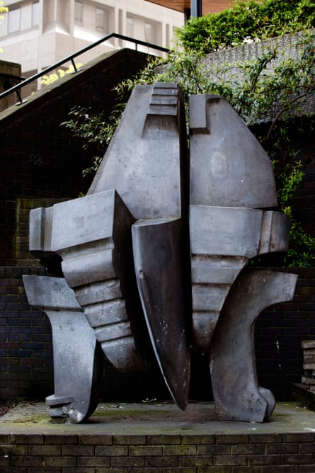
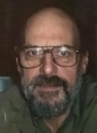

My father-in-law, Glenn Hellman, who has died aged 87, was a sculptor whose work first came to public attention when he won a national competition in 1964 to design sculpture for the new Merrion shopping centre in Leeds, with his piece Androgyne, constructed in cast aluminium.
Androgyne, Glenn Hellman’s 1965 sculpture for the Merrion shopping centre in Leeds.Photograph: SimonHS/Alamy
Often working in welded bronze and other alloys, Glenn went on to have one-man shows in London at the Leicester Galleries; the Roland, Browse and Delbanco gallery; and the Morley Gallery. Latterly he made his home in west Wales, and his most recent exhibitions were at the Rhiannon Gallery, in Tregaron.
In the 1960s and 70s he was a lecturer in art, at Goldsmiths’ College (now Goldsmiths, University of London), and at Morley College, where he set up the sculpture department. Glenn’s sculpture Big King, commissioned by Morley College, is on display in the college grounds.
Other public works included Cofeb Llywelyn (1982), commissioned by Gwynedd county council to commemorate the 700th anniversary of Llywelyn’s death. Glenn made the eagle for this collaborative piece, which is on display in Castle Street, Caernarfon.
Born in Walthamstow, east London, Glenn was the youngest of the three children of Lucy (nee Hanson) and Albert Hellmann. His father was a former army officer who had been injured during the first world war (and had dropped the double n from his surname before joining the army) and was often away from home receiving medical care; his mother took care of the children. Glenn went to a school for the children of military veterans, the Duke of York’s Royal Military school in Guston, Kent, then studied at Walthamstow School of Art and Hornsey College of Art in London, where he assisted the sculptor Robert Adams.
Hellman moved to a smallholding in west Wales, where he and his wife bred Manx Loaghtan sheep
After graduation he began work in 1965 as a lecturer at Goldsmiths’. The previous year he had married Jane Hensler, a fellow artist, and in 1976, with their young sons, Sean and Toby, they moved to remote west Wales to live on a smallholding, a hill farm called Pantrhedyn in Ceredigion.
Glenn continued to teach part-time at Goldsmiths’ until 1983, but he also worked as an industrial blacksmith and welder, as well as tending the livestock at Pantrhedyn, where Jane and Glenn bred Manx Loaghtan sheep. Glenn was a founder member of the Welsh Endurance Riding national team for Wales, and competed enthusiastically. He also learned the craft of hand-tooled saddlery and was an expert saddler, competing in the national Eisteddfod with his work, and in 1976 winning a prize.
After Jane’s death in 2014, Glenn found some comfort in looking after her many cats and writing poetry, and he embarked on occasional endurance riding trips, including two in Peru.
He is survived by Sean (my husband), and Toby.